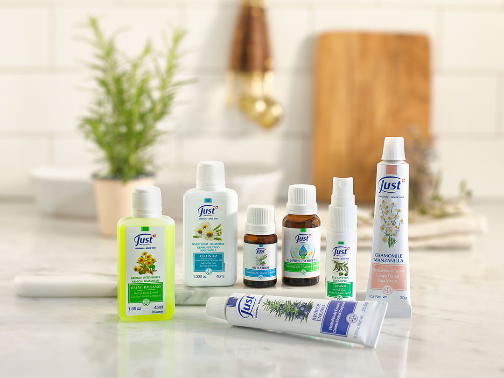

Just para tu Bienestar
Descubre cómo los aceites esenciales Just pueden mejorar tu salud física y emocional, ofreciéndote una experiencia revitalizante y natural.
Just en tu Rutina Diaria

Aprende sencillos consejos sobre la incorporación de los aceites esenciales Just en tu día a día para maximizar sus beneficios y mejorar tu calidad de vida.
Aromaterapia en Casa

Explora el arte de la aromaterapia con los aceites esenciales Just y transforma tu hogar en un refugio de paz y relajación.